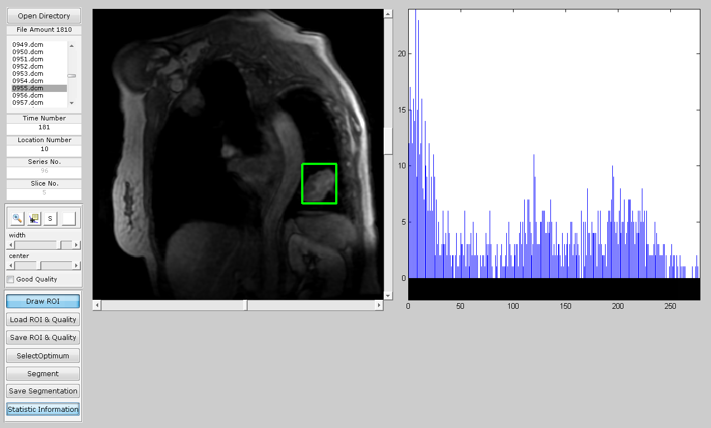

function varargout = ui(varargin)
gui_Singleton = 1;
gui_State = struct('gui_Name', mfilename, ...
'gui_Singleton', gui_Singleton, ...
'gui_OpeningFcn', @ui_OpeningFcn, ...
'gui_OutputFcn', @ui_OutputFcn, ...
'gui_LayoutFcn', [] , ...
'gui_Callback', []);
if nargin && ischar(varargin{1})
gui_State.gui_Callback = str2func(varargin{1});
end
if nargout
[varargout{1:nargout}] = gui_mainfcn(gui_State, varargin{:});
else
gui_mainfcn(gui_State, varargin{:});
end
function ui_OpeningFcn(hObject, eventdata, handles, varargin)
handles.uidata=[];
handles.uidata=uidata();
handles.uidata.fileAmount = 0;
handles.uidata.timeNumber = 1;
handles.uidata.locationNumber = 1;
handles.uidata.showTimeNumber = 1;
handles.uidata.showLoctNumber = 1;
handles.uidata.canvasInitX = 200;
handles.uidata.canvasInitY = 0;
handles.uidata.canvasPosInv = 5;
handles.uidata.figureHeight = 250;
handles.uidata.figureWidth = 1200;
handles.uidata.curCanvas = 0;
handles.uidata.curSeries = 0;
handles.uidata.curSlice = 0;
handles.uidata.curSegSlice = 0;
handles.uidata.curSliceRoi = 0;
handles.uidata.curSelectedSeries = 0;
handles.uidata.curSelectedSlice = 0;
handles.uidata.contrast = 0;
handles.uidata.luminosity = 0;
handles.uidata.flagGoodQual = [];
handles.uidata.allRoi = [];
handles.uidata.curPt1 = [];
handles.uidata.curPt2 = [];
handles.uidata.isDrawingRoi = 0;
handles.output = hObject;
set(gcf,'DoubleBuffer','on');
tglBtnZoomIn = importdata('icons\tool_zoom_in.png');
tglBtnDataCursor = importdata('icons\tool_data_cursor.png');
set(handles.tglBtnZoom,'CDATA',im2double(tglBtnZoomIn.cdata));
set(handles.tglBtnDataCursor,'CDATA',im2double(tglBtnDataCursor.cdata));
set(handles.axesImg,'box','on','XTickLabel','','XTickLabel','','XTick',[],'YTick',[]);
addpath(genpath(pwd));
guidata(hObject, handles);
function varargout = ui_OutputFcn(hObject, eventdata, handles)
varargout{1} = handles.output;
function btnOpen_Callback(hObject, eventdata, handles)
if (~isempty(handles.uidata.pathName))
[fname,pname]=uigetfile({'*.dcm','DICOM file'; '*.jpg;*.png', 'Image files'},'Please select a DICOM file.',handles.uidata.pathName);
else
[fname,pname]=uigetfile({'*.dcm','DICOM file'; '*.jpg;*.png', 'Image files'},'Please select a DICOM file.');
end
tic
if ((fname~=0))
handles.uidata.pathName = pname;
[pathstr, aa, ext] = fileparts(strcat(pname, fname));
if (~isempty(ext))
extension=strcat('*', ext);
else
extension='*';
end
dirFolder=strcat(pname,extension);
FileList=dir(dirFolder);
Total=length(FileList);
n=0;
index = 1;
for k=1:1:Total
if (~isdir(FileList(k).name))
n=n+1;
filename = {FileList(k).name};
fileList(n)= filename;
if strcmpi(filename, fname)
index = k;
end
end
end
handles.uidata.fileAmount = n;
if (n>0)
fileList = fileList(1:n);
handles.uidata.fileNames = fileList;
set(handles.lbFileList,'string',fileList);
set(handles.lbFileList,'value', 1);
set(handles.txtFileAmount,'string',['File Amount ' num2str(n)]);
guidata(hObject, handles);
end
for i=1:n
handles.uidata.dcmInfo{i} = dicominfo([pname fileList{i}]);
end
handles.uidata.timeNumber = handles.uidata.dcmInfo{1}.NumberOfTemporalPositions;
handles.uidata.locationNumber = handles.uidata.dcmInfo{1}.ImagesInAcquisition/...
handles.uidata.dcmInfo{1}.NumberOfTemporalPositions;
set(handles.edtTimeNumber,'String',num2str(handles.uidata.timeNumber));
set(handles.edtLocationNumber,'String',num2str(handles.uidata.locationNumber));
tmpImg = dicomread(handles.uidata.dcmInfo{1});
maxx = max(max(tmpImg));
minn = min(min(tmpImg));
set(handles.sldWinCenter,'value',(maxx-minn)/2.0+minn);
set(handles.sldWinWidth,'value',maxx-minn);
handles.uidata.fileNamesIJ = cell(handles.uidata.timeNumber,handles.uidata.locationNumber);
handles.uidata.fileNameOrderIJ = zeros(handles.uidata.timeNumber,handles.uidata.locationNumber);
for i=1:n
timeOrder = handles.uidata.dcmInfo{i}.TemporalPositionIdentifier;
locaOrder = mod(handles.uidata.dcmInfo{i}.InstanceNumber,handles.uidata.locationNumber);
if locaOrder==0
locaOrder = 10;
end
handles.uidata.fileNamesIJ{timeOrder,locaOrder} = handles.uidata.fileNames{i};
handles.uidata.fileNameOrderIJ(timeOrder,locaOrder) = i;
end
handles.uidata.curSeries = 1;
handles.uidata.curSlice = 1;
handles.uidata.allRoi = zeros(n,4);
handles.uidata.flagGoodQual = zeros(handles.uidata.timeNumber,handles.uidata.locationNumber);
handles = loadDcmImages(handles);
set(handles.edtDispNumTime,'String',num2str(handles.uidata.curSeries));
set(handles.edtDispNumLoc,'String',num2str(handles.uidata.curSlice));
minValue = 1;
maxValue = handles.uidata.locationNumber;
set(handles.sldSlice,'min',minValue,'max',maxValue);
set(handles.sldSlice,'sliderstep',[1/(maxValue-minValue) 1/(maxValue-minValue)]);
set(handles.sldSlice,'value',maxValue);
set(handles.sldSlice,'visible','on');
minValue = 1;
maxValue = n/handles.uidata.locationNumber;
set(handles.sldSeries,'Min',minValue,'max',maxValue);
set(handles.sldSeries,'sliderstep',[1/(maxValue-minValue) 1/(maxValue-minValue)]);
set(handles.sldSeries,'value',minValue);
set(handles.sldSeries,'visible','on');
guidata(hObject,handles);
end
toc
function lbFileList_Callback(hObject, eventdata, handles)
singleIndex = get(hObject,'Value');
[curSlice curSeries] = singleInd2doubleInd(singleIndex,handles);
if handles.uidata.curSeries == curSeries && handles.uidata.curSlice == curSlice
return;
end
handles.uidata.curSeries = curSeries;
handles.uidata.curSlice = curSlice;
handles = loadDcmImages(handles);
set(handles.edtDispNumLoc,'String',num2str(handles.uidata.curSlice));
set(handles.edtDispNumTime,'String',num2str(handles.uidata.curSeries));
set(handles.sldSeries,'value',curSeries);
minValue = get(handles.sldSlice,'min');
maxValue = get(handles.sldSlice,'max');
set(handles.sldSlice,'value',minValue + maxValue - curSlice);
set(handles.tglBtnDrawRoi,'Value',0);
guidata(hObject,handles);
function lbFileList_CreateFcn(hObject, eventdata, handles)
if ispc && isequal(get(hObject,'BackgroundColor'), get(0,'defaultUicontrolBackgroundColor'))
set(hObject,'BackgroundColor','white');
end
function edtTimeNumber_Callback(hObject, eventdata, handles)
function edtTimeNumber_CreateFcn(hObject, eventdata, handles)
if ispc && isequal(get(hObject,'BackgroundColor'), get(0,'defaultUicontrolBackgroundColor'))
set(hObject,'BackgroundColor','white');
end
function edtLocationNumber_Callback(hObject, eventdata, handles)
function edtLocationNumber_CreateFcn(hObject, eventdata, handles)
if ispc && isequal(get(hObject,'BackgroundColor'), get(0,'defaultUicontrolBackgroundColor'))
set(hObject,'BackgroundColor','white');
end
function btnSaveRoiFlags_Callback(hObject, eventdata, handles)
pname = handles.uidata.pathName;
roi = handles.uidata.allRoi;
flags = handles.uidata.flagGoodQual;
save([pname 'roiflags.mat'],'roi','flags');
function btnSetRoiFlags_Callback(hObject, eventdata, handles)
pname = handles.uidata.pathName;
if exist([pname 'roiflags.mat'],'file')
load([pname 'roiflags.mat']);
handles.uidata.allRoi = roi;
handles.uidata.flagGoodQual = flags;
guidata(hObject,handles);
end
handles = loadDcmImages(handles);
guidata(hObject,handles);
function btnSeg_Callback(hObject, eventdata, handles)
curSeries = handles.uidata.curSeries;
curSlice = handles.uidata.curSlice;
curIndex = doubleInd2singleInd(curSlice,curSeries,handles);
curRoi = floor(handles.uidata.allRoi(curIndex,:));
if ~(curRoi(1) >= 0 && curRoi(2) > 0 && curRoi(3) > 0 && curRoi(4) > 0 && abs(curRoi(1) - curRoi(2))>0....
&& abs(curRoi(3) - curRoi(4)) > 0)
return;
end
handles.uidata.curSegSlice = curSlice;
handles.uidata.curSliceRoi = curRoi;
set(handles.tglBtnSegShow,'Value',1);
handles = loadDcmImages(handles);
guidata(hObject,handles);
function btnSaveSeg_Callback(hObject, eventdata, handles)
function [handles]=loadDcmImages(handles)
curSeries = handles.uidata.curSeries;
curSlice = handles.uidata.curSlice;
curIndex = doubleInd2singleInd(curSlice,curSeries,handles);
curSegSlice = handles.uidata.curSegSlice;
flagGoodQual = handles.uidata.flagGoodQual(curSeries,curSlice);
curRoi = floor(handles.uidata.allRoi(curIndex,:));
curSliceRoi = floor(handles.uidata.curSliceRoi);
oriImg = double(dicomread(handles.uidata.dcmInfo{curIndex}));
maxx=max(max(oriImg));
minn=min(min(oriImg));
set(handles.sldWinCenter,'max',maxx);
set(handles.sldWinCenter,'min',minn);
set(handles.sldWinWidth,'max',maxx-minn);
set(handles.sldWinWidth,'min',0);
tmpW = get(handles.sldWinWidth,'Value');
tmpC = get(handles.sldWinCenter,'Value');
if (tmpC > maxx)
set(handles.sldWinCenter,'value',maxx);
else if (tmpC< minn)
set(handles.sldWinCenter,'value',minn);
end
end
if (tmpW > (maxx-minn))
set(handles.sldWinWidth,'value',maxx-minn);
end
imgToShow = visualProcess(oriImg,handles);
tglBtnSegShowState = get(handles.tglBtnSegShow,'Value');
if curSlice == curSegSlice && tglBtnSegShowState == 1
thresholdValue = ostu(imgToShow);
roiRegion = imgToShow(curSliceRoi(2):curSliceRoi(1),curSliceRoi(3):curSliceRoi(4));
roiRegion(roiRegion > thresholdValue) = 256;
imgToShow(curSliceRoi(2):curSliceRoi(1),curSliceRoi(3):curSliceRoi(4)) = roiRegion;
imgToShow(:,:,1) = imgToShow(:,:,1);
imgToShow(:,:,2) = imgToShow(:,:,1);
imgToShow(:,:,3) = imgToShow(:,:,1);
imgToShow(curSliceRoi(2):curSliceRoi(1),curSliceRoi(3):curSliceRoi(4),2) = 0;
imgToShow(curSliceRoi(2):curSliceRoi(1),curSliceRoi(3):curSliceRoi(4),3) = 0;
end
imshow(imgToShow,'parent',handles.axesImg);
tpos(1) = 256; tpos(2) = 1; tpos(3) = 1; tpos(4) = 256;
tglDrawState = get(handles.tglBtnDrawRoi,'Value');
if flagGoodQual == 1 && handles.uidata.isDrawingRoi == 0
drawBoxes(handles.axesImg,tpos,[1 1 0]);
end
if sum(curRoi)>0 && handles.uidata.isDrawingRoi == 0
drawBoxes(handles.axesImg,curRoi,[0 1 0]);
if curRoi(1) >= 0 && curRoi(2) > 0 && curRoi(3) > 0 && curRoi(4) > 0 && abs(curRoi(1) - curRoi(2))>0....
&& abs(curRoi(3) - curRoi(4)) > 0
axes(handles.axesStat);
roiRegion = uint16(oriImg(curRoi(2):curRoi(1),curRoi(3):curRoi(4)));
maxValue = max(max(roiRegion));
minValue = min(min(roiRegion));
[counts x] = imhist(roiRegion,65536);
imhist(roiRegion,65536);
set(gca,'xlim',[minValue maxValue],'ylim' ,[0 max(counts)]);
else
axes(handles.axesStat);
plot([1 1],[0 0]);
end
end
set(handles.ckbGoodQual,'Value',flagGoodQual);
function drawBoxes(h,pos,color)
axes(h)
hold on
plot(h,[pos(3) pos(4) pos(4) pos(3 ) pos(3)],[pos(1) pos(1) pos(2) pos(2) pos(1)],'color',color,'linestyle','-','linewidth',3);
hold off
function edtDispNumTime_Callback(hObject, eventdata, handles)
function edtDispNumTime_CreateFcn(hObject, eventdata, handles)
if ispc && isequal(get(hObject,'BackgroundColor'), get(0,'defaultUicontrolBackgroundColor'))
set(hObject,'BackgroundColor','white');
end
function edtDispNumLoc_Callback(hObject, eventdata, handles)
function edtDispNumLoc_CreateFcn(hObject, eventdata, handles)
if ispc && isequal(get(hObject,'BackgroundColor'), get(0,'defaultUicontrolBackgroundColor'))
set(hObject,'BackgroundColor','white');
end
function ckbGoodQual_Callback(hObject, eventdata, handles)
curSlice = handles.uidata.curSlice;
curSeries = handles.uidata.curSeries;
fgq = get(hObject,'Value');
handles.uidata.flagGoodQual(curSeries,curSlice) = fgq;
if fgq == 1
ymin = 1
ymax = 256;
xmin = 1;
xmax = 256;
drawBoxes(handles.axesImg,[ymax ymin xmin xmax],[1 1 0]);
else
loadDcmImages(handles);
end
guidata(hObject,handles);
function sldWinWidth_Callback(hObject, eventdata, handles)
handles.uidata.contrast = get(handles.sldWinWidth,'value');
handles = loadDcmImages(handles);
guidata(hObject,handles);
function sldWinWidth_CreateFcn(hObject, eventdata, handles)
if isequal(get(hObject,'BackgroundColor'), get(0,'defaultUicontrolBackgroundColor'))
set(hObject,'BackgroundColor',[.9 .9 .9]);
end
function sldWinCenter_Callback(hObject, eventdata, handles)
handles.uidata.luminosity = get(handles.sldWinCenter,'value');
handles = loadDcmImages(handles);
guidata(hObject,handles);
function sldWinCenter_CreateFcn(hObject, eventdata, handles)
if isequal(get(hObject,'BackgroundColor'), get(0,'defaultUicontrolBackgroundColor'))
set(hObject,'BackgroundColor',[.9 .9 .9]);
end
function sldSlice_Callback(hObject, eventdata, handles)
minValue = get(handles.sldSlice,'min');
maxValue = get(handles.sldSlice,'max');
oldSlice = handles.uidata.curSlice;
handles.uidata.curSlice = minValue + maxValue - floor(get(handles.sldSlice,'Value'));
if handles.uidata.curSlice < 1 || handles.uidata.curSlice > handles.uidata.locationNumber
return;
end
if oldSlice == handles.uidata.curSlice
return;
end
handles = loadDcmImages(handles);
set(handles.edtDispNumLoc,'String',num2str(handles.uidata.curSlice));
set(handles.lbFileList,'value',doubleInd2singleInd(handles.uidata.curSlice,handles.uidata.curSeries,handles));
set(handles.tglBtnDrawRoi,'Value',0);
guidata(hObject,handles);
function sldSlice_CreateFcn(hObject, eventdata, handles)
if isequal(get(hObject,'BackgroundColor'), get(0,'defaultUicontrolBackgroundColor'))
set(hObject,'BackgroundColor',[.9 .9 .9]);
end
function sldSeries_Callback(hObject, eventdata, handles)
oldSeries = handles.uidata.curSeries;
handles.uidata.curSeries = ceil(get(handles.sldSeries,'Value'));
if handles.uidata.curSeries < 1 || handles.uidata.curSeries > handles.uidata.timeNumber
return;
end
if oldSeries == handles.uidata.curSeries
return;
end
handles = loadDcmImages(handles);
set(handles.edtDispNumTime,'String',num2str(handles.uidata.curSeries));
set(handles.lbFileList,'Value',doubleInd2singleInd(handles.uidata.curSlice,handles.uidata.curSeries,handles));
set(handles.tglBtnDrawRoi,'Value',0);
guidata(hObject,handles);
function sldSeries_CreateFcn(hObject, eventdata, handles)
if isequal(get(hObject,'BackgroundColor'), get(0,'defaultUicontrolBackgroundColor'))
set(hObject,'BackgroundColor',[.9 .9 .9]);
end
function btnTest_Callback(hObject, eventdata, handles)
set(handles.edtDispNumTime,'string','2');
function tglBtnZoomReset_Callback(hObject, eventdata, handles)
function tglBtnZoom_Callback(hObject, eventdata, handles)
tglbtnState = get(hObject,'value');
if tglbtnState == 1
zoom on;
else
zoom off;
end
function tglBtnSegShow_Callback(hObject, eventdata, handles)
loadDcmImages(handles);
guidata(hObject,handles);
function [slice series] = singleInd2doubleInd(singleIndex,handles)
wholeSlice = handles.uidata.locationNumber;
slice = mod(singleIndex,wholeSlice);
if slice == 0
slice = wholeSlice;
end
series = ceil(singleIndex / wholeSlice);
function singleIndex = doubleInd2singleInd(slice,series,handles)
wholeSlice = handles.uidata.locationNumber;
singleIndex = wholeSlice * (series - 1) + slice;
function tglBtnDataCursor_Callback(hObject, eventdata, handles)
tglbtnState = get(handles.tglBtnDataCursor,'value');
if tglbtnState == 0
datacursormode off;
return;
else
datacursormode on;
end
function btnStatInfo_Callback(hObject, eventdata, handles)
curSeries = handles.uidata.curSeries;
curSlice = handles.uidata.curSlice;
curIndex = doubleInd2singleInd(curSlice,curSeries,handles);
curRoi = floor(handles.uidata.allRoi(curIndex,:));
if ~(curRoi(1) >= 0 && curRoi(2) > 0 && curRoi(3) > 0 && curRoi(4) > 0 && abs(curRoi(1) - curRoi(2))>0....
&& abs(curRoi(3) - curRoi(4)) > 0)
return;
end
dcmInfo = handles.uidata.dcmInfo;
locNum = handles.uidata.locationNumber;
n = length(dcmInfo);
j = 1;
refImg = double(dicomread(dcmInfo{curIndex}));
refImgLocal = refImg(curRoi(2):curRoi(1),curRoi(3):curRoi(4));
refImgLocal = refImgLocal(:);
refImg = refImg(:);
for i = curSlice:locNum:n
img = double(dicomread(dcmInfo{i}));
imgLocal = img(curRoi(2):curRoi(1),curRoi(3):curRoi(4));
imgLocal = imgLocal(:);
img = img(:);
a1 =0.01;a2 = 0.01;a3 =0.01;
a = 0.1; b = 0.2; c = 0.7;
u1 = mean(refImgLocal);u2 = mean(imgLocal);
c1 = std(refImgLocal);c2 = std(imgLocal);
c12_tmp = cov(refImgLocal,imgLocal);
c12 = c12_tmp(2);
l = (2*u1*u2+a1)/(u1*u1+u2*u2+a1);
c = (2*c1*c2+a2)/(c1*c1+c2*c2+a2);
s = (2*c12+a3)/(c1*c2+a3);
ssimLocal(j) = l^a + c^b + s^c;
t3 = corrcoef(refImgLocal,imgLocal);
corrLocal(j) = t3(2);
contr(j) = cmptContr(img);
j = j + 1;
end
ssimMax = find(diff(sign(diff(ssimLocal)))<0) + 1;
corrMax = find(diff(sign(diff(corrLocal)))<0) + 1;
ssimIndex = doubleInd2singleInd(curSlice,ssimMax,handles);
imgRef = double(dicomread(dcmInfo{curIndex}));
for i = 1:10
filt = fspecial('gaussian',3,i*0.095);
imgBlurry(:,:,i) = imfilter(imgRef,filt,'circular');
end
num = length(ssimIndex);
for p = 1:num
img = double(dicomread(dcmInfo{ssimIndex(p)}));
for i = 1:10
tmp = corrcoef(imgBlurry(:,:,i),img);
similarity(i) = tmp(2);
end
tmp = find(similarity == max(similarity));
blurDegree(p) = tmp(1);
end
tmp = blurDegree;
tmp(tmp==min(tmp)) = [];
t = min(tmp);
ssimIndex = ssimIndex(blurDegree <= t);
ssimMax = ssimMax(blurDegree <= t);
for i=1:length(ssimIndex)
img = double(dicomread(dcmInfo{ssimIndex(i)}));
tmp = corrcoef(imgBlurry(:,:,1),img);
scores(i) = tmp(2);
end
scores = 3*(scores - min(scores))/(max(scores) - min(scores)) + 7;
indices = HighQualitySelection(dcmInfo{ssimIndex},ssimMax,scores,length(dcmInfo)/locNum);
function axesImg_ButtonDownFcn(hObject, eventdata, handles)
function figure1_WindowButtonDownFcn(hObject, eventdata, handles)
state = get(handles.tglBtnDrawRoi,'Value');
if state == 0
return;
end
handles.uidata.isDrawingRoi = 1;
pos = get(handles.axesImg,'CurrentPoint');
handles.uidata.curPt1 = pos(1,1:2);
handles.uidata.curPt2 = pos(1,1:2);
guidata(hObject,handles);
function figure1_WindowButtonMotionFcn(hObject, eventdata, handles)
state = get(handles.tglBtnDrawRoi,'Value');
if handles.uidata.isDrawingRoi == 0 || state == 0
return;
end
loadDcmImages(handles);
pt2 = get(handles.axesImg,'CurrentPoint');
pt2 = pt2(1,1:2);
pt2(pt2>256) = 256;
pt1 = handles.uidata.curPt1;
drawBoxes(handles.axesImg,[pt2(2) pt1(2) pt1(1) pt2(1)],[0 1 0]);
handles.uidata.curPt2 = pt2;
guidata(hObject,handles);
function figure1_WindowButtonUpFcn(hObject, eventdata, handles)
state = get(handles.tglBtnDrawRoi,'Value');
if state ==0 || handles.uidata.isDrawingRoi == 0
return;
end
slice = handles.uidata.curSlice;
series = handles.uidata.curSeries;
dcmInd = doubleInd2singleInd(slice,series,handles);
ymaxmin = sort([handles.uidata.curPt2(2) handles.uidata.curPt1(2)],'descend');
xminmax = sort([handles.uidata.curPt1(1) handles.uidata.curPt2(1)],'ascend');
handles.uidata.allRoi(dcmInd,:) = [ymaxmin(1) ymaxmin(2) xminmax(1) xminmax(2)];
handles.uidata.curPt1 = [];
handles.uidata.curPt2 = [];
handles.uidata.isDrawingRoi = 0;
guidata(hObject,handles);
loadDcmImages(handles);
function tglBtnDrawRoi_Callback(hObject, eventdata, handles)
function btnSelectOptimum_Callback(hObject, eventdata, handles)
function btnReset_Callback(hObject, eventdata, handles)
